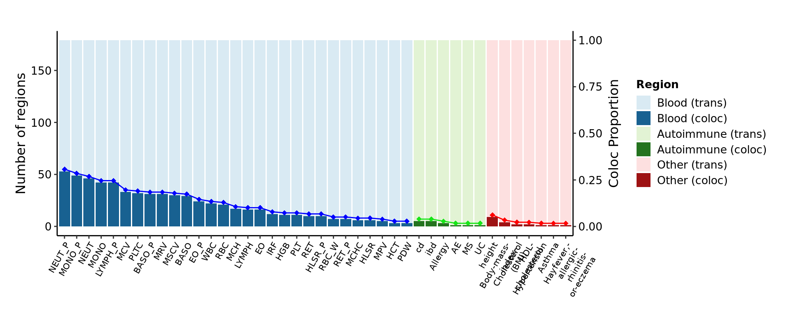
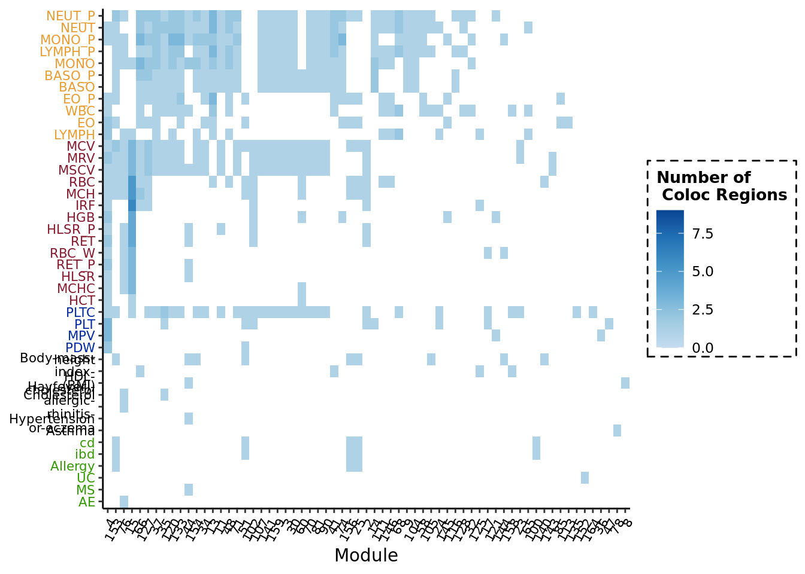

To look at what the proportion of trans-eQTLs that are colocalized with each of the traits analyzed.
# I/O & paras -----
file_res_coloc_reg_prop1 <- '/project2/xuanyao/llw/coloc/ukbb_coloc_blood_traits/data/coloc_region_prop_merged.txt'
file_res_coloc_reg_prop2 <- '/project2/xuanyao/llw/coloc/immune_traits/pmid_all/coloc_region_prop_merged.txt'
file_res_coloc_reg_prop3 <- '/project2/xuanyao/llw/coloc/ukbb_coloc_more_traits/all_trait/data/coloc_region_prop_merged.txt'
# read files -----
res_coloc_reg_prop1 <- fread(file_res_coloc_reg_prop1, header = TRUE)
res_coloc_reg_prop2 <- fread(file_res_coloc_reg_prop2, header = TRUE)
res_coloc_reg_prop3 <- fread(file_res_coloc_reg_prop3, header = TRUE)
res_coloc_reg_prop2$trait <- res_coloc_reg_prop2$Phenocode
res_coloc_reg_prop <- rbind(res_coloc_reg_prop1, res_coloc_reg_prop2, res_coloc_reg_prop3)
df_plt1 <- res_coloc_reg_prop1 %>%
arrange(desc(propPvalColocMerg)) %>%
pivot_longer(cols = c(nRegionPvalMerg), names_to = "if_merge", values_to = "Num_reg") %>%
pivot_longer(cols = c(nRegionPvalColocMerg), names_to = "if_merge_coloc", values_to = "Num_reg_coloc") %>%
pivot_longer(cols = c(propPvalColocMerg), names_to = "if_merge_prop", values_to = "prop") %>%
mutate(if_merge = replace(if_merge, if_merge == "nRegionPvalMerg", "(trans)"),
if_merge_coloc = replace(if_merge_coloc, if_merge_coloc == "nRegionPvalColocMerg", "(coloc)"),
trait_type = paste("Blood", if_merge),
trait_type_coloc = paste("Blood", if_merge_coloc),
trait_type_prop = paste("Blood", if_merge_prop))
df_plt2 <- res_coloc_reg_prop2 %>%
arrange(desc(propPvalColocMerg)) %>%
pivot_longer(cols = c(nRegionPvalMerg), names_to = "if_merge", values_to = "Num_reg") %>%
pivot_longer(cols = c(nRegionPvalColocMerg), names_to = "if_merge_coloc", values_to = "Num_reg_coloc") %>%
pivot_longer(cols = c(propPvalColocMerg), names_to = "if_merge_prop", values_to = "prop") %>%
mutate(if_merge = replace(if_merge, if_merge == "nRegionPvalMerg", "(trans)"),
if_merge_coloc = replace(if_merge_coloc, if_merge_coloc == "nRegionPvalColocMerg", "(coloc)"),
trait_type = paste("Autoimmune", if_merge),
trait_type_coloc = paste("Autoimmune", if_merge_coloc),
trait_type_prop = paste("Autoimmune", if_merge_prop))
df_plt3 <- res_coloc_reg_prop3 %>%
arrange(desc(propPvalColocMerg)) %>%
pivot_longer(cols = c(nRegionPvalMerg), names_to = "if_merge", values_to = "Num_reg") %>%
pivot_longer(cols = c(nRegionPvalColocMerg), names_to = "if_merge_coloc", values_to = "Num_reg_coloc") %>%
pivot_longer(cols = c(propPvalColocMerg), names_to = "if_merge_prop", values_to = "prop") %>%
mutate(if_merge = replace(if_merge, if_merge == "nRegionPvalMerg", "(trans)"),
if_merge_coloc = replace(if_merge_coloc, if_merge_coloc == "nRegionPvalColocMerg", "(coloc)"),
trait_type = paste("Other", if_merge),
trait_type_coloc = paste("Other", if_merge_coloc),
trait_type_prop = paste("Other", if_merge_prop))
df_plt <- rbind(df_plt1, df_plt2, df_plt3)
# add trait order
df_plt$trait <- fct_inorder(factor(df_plt$trait))
y_lim <- max(unique(df_plt$Num_reg))
y_nudge <- 2
base_plt <- ggplot(df_plt, aes(x = trait)) +
geom_bar(aes(y = Num_reg, fill = trait_type), stat = "identity", position = position_dodge(width = 1)) +
geom_bar(aes(y = Num_reg_coloc, fill = trait_type_coloc), stat = "identity", position = position_dodge(width = 1)) +
geom_point(aes(y = prop*y_lim, color = trait_type_prop),
#position = position_dodge(width = 1),
show.legend = FALSE,
shape = 18, size = 2,
position = position_nudge(y = y_nudge)) +
geom_line(aes(y = prop*y_lim, group = trait_type_prop, color = trait_type_prop),
#position = position_dodge(width = 1),
show.legend = FALSE,
position = position_nudge(y = y_nudge)) +
labs(x = NULL, y = "Number of regions", fill = "Region", color = NULL)
base_plt +
scale_x_discrete(labels = function(x) str_wrap(x, width = 10)) +
scale_y_continuous(limits = c(0, y_lim),
sec.axis = sec_axis(~./y_lim, name = "Coloc Proportion")) +
#scale_fill_brewer(palette = "Paired", direction = -1)
scale_fill_manual(
breaks = c(
"Blood (trans)", "Blood (coloc)",
"Autoimmune (trans)", "Autoimmune (coloc)",
"Other (trans)", "Other (coloc)"
),
values = c("Blood (trans)" = "#d9eaf3", "Autoimmune (trans)" = "#e2f3d4", "Other (trans)" = "#fde0e0",
"Blood (coloc)" = "#186191", "Autoimmune (coloc)" = "#24731f", "Other (coloc)" = "#9e1213")
) +
scale_color_manual(
breaks = c("Blood propPvalColocMerg", "Autoimmune propPvalColocMerg", "Other propPvalColocMerg"),
values = c("Blood propPvalColocMerg" = "blue",
"Autoimmune propPvalColocMerg" = "#18e518",
"Other propPvalColocMerg" = "#ff0000")
) +
theme_classic() +
theme(panel.grid.major = element_blank(),
panel.grid.minor = element_blank(),
legend.text = element_text(size = 10),
legend.title = element_text(size = 10, face = "bold"),
#legend.background = element_rect(color = "black", linetype = "dashed"),
legend.key.size= unit(0.5, "cm"),
axis.line = element_line(colour="black"),
plot.margin=unit(c(10,5,5,5),"mm"),
#legend.margin = margin(-0.5,0,0,0, unit="cm"),
axis.text.x = element_text(angle = 60, hjust=1, vjust = 1, size = 8, color = "black"),
axis.text.y = element_text(colour = "black", size = 10),
axis.title.y = element_text(size = 12),
axis.title.y.right = element_text(angle = 90),
axis.title.x = element_text(size = 12))
Dots show the proportion. Light shade bars show the number of trans-eQTL loci for coloc. Dark shade bars show the coloc regions with the corresponding traits on x-axis. Color for trait types.
Next, I further looked into what are those coloc regions for each trait exactly, in terms of what are the correpsonding module that coloc with the trait, and how many coloc regions for each (module, trait) pair.
# I/O & paras -----
file_list_resColoc <- c(
list.files(
"/project2/xuanyao/llw/coloc/ukbb_coloc_blood_traits",
"^.*coloc_reg_w_merged.txt$",
full.names = TRUE, recursive = TRUE
) %>% set_names("blood"),
list.files(
"/project2/xuanyao/llw/coloc/immune_traits",
"^.*coloc_reg_w_merged.txt$",
full.names = TRUE, recursive = TRUE
) %>% set_names("immune"),
list.files(
"/project2/xuanyao/llw/coloc/ukbb_coloc_more_traits",
"^.*coloc_reg_w_merged.txt$",
full.names = TRUE, recursive = TRUE
) %>% set_names("other")
)
file_trait_type <- '/project2/xuanyao/llw/coloc/ukbb_coloc_blood_traits/ukbb_blood_traits.csv'
# read files -----
resColoc_all <- lapply(file_list_resColoc, fread, header = TRUE, drop = "Phenocode")
resColoc_all <- bind_rows(resColoc_all[(lapply(resColoc_all, nrow) %>% unlist()) > 0],
.id = "trait_type")
trait_type_blood <- fread(file_trait_type, header = TRUE, sep = ",")
# Figure data prep -----
## assign more specific blood traits groups -----
resColoc_all[resColoc_all$trait_type == "blood", "trait_type"] <- resColoc_all %>%
filter(trait_type == "blood") %>%
left_join(trait_type_blood, by = c("trait" = "Trait Abbreviation")) %>%
pull(`GWAS Group`)
## summarize the number of un-merged and merged coloc regions for (module, trait) -----
resPlot <- resColoc_all %>%
group_by(trait_type, trait, Module) %>%
summarise(num_of_regions = n_distinct(Region),
num_of_regions_merg = n_distinct(merged_region)) %>%
ungroup()## `summarise()` has grouped output by 'trait_type', 'trait'. You can override
## using the `.groups` argument.## set module order by num of coloc regions and change labels -----
Module_order = resPlot %>%
separate(Module, into = c(NA, "module_num"), sep = "module", remove = FALSE, convert = TRUE) %>%
group_by(Module, module_num) %>%
summarise(n_coloc_regions = sum(num_of_regions),
n_coloc_regions_merg = sum(num_of_regions_merg),
n_coloc_trait = n()) %>%
ungroup() %>%
arrange(desc(n_coloc_trait), desc(n_coloc_regions_merg), desc(n_coloc_regions))## `summarise()` has grouped output by 'Module'. You can override using the
## `.groups` argument.resPlot$Module = factor(resPlot$Module,
levels = Module_order$Module,
labels = paste0(Module_order$module_num))
## set phenotype order within each trait type by num of coloc regions -----
pheno_order <- resPlot %>%
group_by(trait_type, trait) %>%
summarise(n_coloc_regions = sum(num_of_regions),
n_coloc_regions_merg = sum(num_of_regions_merg),
n_coloc_m = n()) %>%
ungroup() %>%
group_by(trait_type) %>%
arrange(n_coloc_m, n_coloc_regions_merg, n_coloc_regions, .by_group = TRUE) %>%
ungroup()## `summarise()` has grouped output by 'trait_type'. You can override using the
## `.groups` argument.resPlot$trait = factor(resPlot$trait,
levels = pheno_order$trait)
## assign colocs to trait type -----
resPlot <- mutate(resPlot,
"trait_color" = recode(trait_type,
"Platelets" = "#0028a1",
"Red blood cells" = "#85192d",
"White blood cells" = "#e89c31",
"immune" = "#339900",
"other" = "black"))
axis_text_color <- resPlot %>% slice(match(levels(trait), trait))
# tile plot of merged coloc regions for (module, trait) -----
base_plt <- ggplot(resPlot, aes(Module, trait)) +
geom_tile(aes(fill = num_of_regions_merg)) +
scale_y_discrete(labels = function(x) str_wrap(x, width = 10)) +
scale_fill_gradientn(colors = RColorBrewer::brewer.pal(8, "Blues")[3:8],
na.value = "red",
limits = c(0, max(c(resPlot$num_of_regions, resPlot$num_of_regions_merg)))) +
labs(y = NULL, x = "Module", fill = "Number of \n Coloc Regions")
base_plt +
theme_classic() +
theme(
legend.title = element_text(size = 10, face = "bold"),
legend.background = element_rect(color = "black", linetype = "dashed"),
axis.text.y = element_text(colour = axis_text_color$trait_color, size = 8),
axis.text.x = element_text(colour = "black", size = 8,
angle = 60, hjust = 1, vjust = 1)
)## Warning: Vectorized input to `element_text()` is not officially supported.
## Results may be unexpected or may change in future versions of ggplot2.
sessionInfo()## R version 4.1.2 (2021-11-01)
## Platform: x86_64-conda-linux-gnu (64-bit)
## Running under: Ubuntu 20.04.3 LTS
##
## Matrix products: default
## BLAS/LAPACK: /scratch/midway2/liliw1/conda_env/rstudio-server/lib/libopenblasp-r0.3.18.so
##
## locale:
## [1] LC_CTYPE=en_US.UTF-8 LC_NUMERIC=C
## [3] LC_TIME=en_US.UTF-8 LC_COLLATE=en_US.UTF-8
## [5] LC_MONETARY=en_US.UTF-8 LC_MESSAGES=en_US.UTF-8
## [7] LC_PAPER=en_US.UTF-8 LC_NAME=C
## [9] LC_ADDRESS=C LC_TELEPHONE=C
## [11] LC_MEASUREMENT=en_US.UTF-8 LC_IDENTIFICATION=C
##
## attached base packages:
## [1] stats graphics grDevices utils datasets methods base
##
## other attached packages:
## [1] data.table_1.14.2 forcats_0.5.1 stringr_1.4.0 dplyr_1.0.7
## [5] purrr_0.3.4 readr_2.1.2 tidyr_1.2.0 tibble_3.1.7
## [9] ggplot2_3.3.6 tidyverse_1.3.1
##
## loaded via a namespace (and not attached):
## [1] tidyselect_1.1.1 xfun_0.29 bslib_0.3.1 haven_2.4.3
## [5] colorspace_2.0-3 vctrs_0.4.1 generics_0.1.2 htmltools_0.5.2
## [9] yaml_2.2.2 utf8_1.2.2 rlang_1.0.3 jquerylib_0.1.4
## [13] pillar_1.7.0 withr_2.5.0 glue_1.6.2 DBI_1.1.3
## [17] RColorBrewer_1.1-3 dbplyr_2.1.1 modelr_0.1.8 readxl_1.3.1
## [21] lifecycle_1.0.1 cellranger_1.1.0 munsell_0.5.0 gtable_0.3.0
## [25] rvest_1.0.2 evaluate_0.14 labeling_0.4.2 knitr_1.37
## [29] tzdb_0.2.0 fastmap_1.1.0 fansi_1.0.3 highr_0.9
## [33] broom_0.7.12 Rcpp_1.0.8.3 backports_1.4.1 scales_1.2.0
## [37] jsonlite_1.7.3 farver_2.1.1 fs_1.5.2 hms_1.1.1
## [41] digest_0.6.29 stringi_1.7.6 grid_4.1.2 cli_3.3.0
## [45] tools_4.1.2 magrittr_2.0.3 sass_0.4.0 crayon_1.5.1
## [49] pkgconfig_2.0.3 ellipsis_0.3.2 xml2_1.3.3 reprex_2.0.1
## [53] lubridate_1.8.0 assertthat_0.2.1 rmarkdown_2.11 httr_1.4.2
## [57] rstudioapi_0.13 R6_2.5.1 compiler_4.1.2